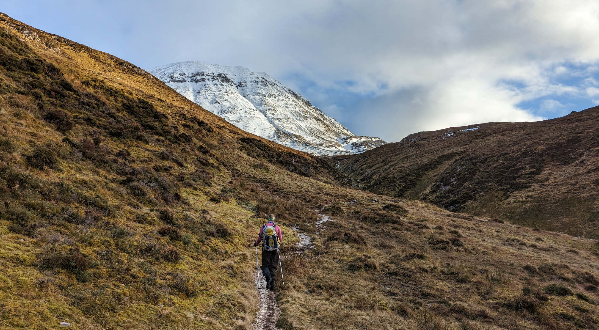
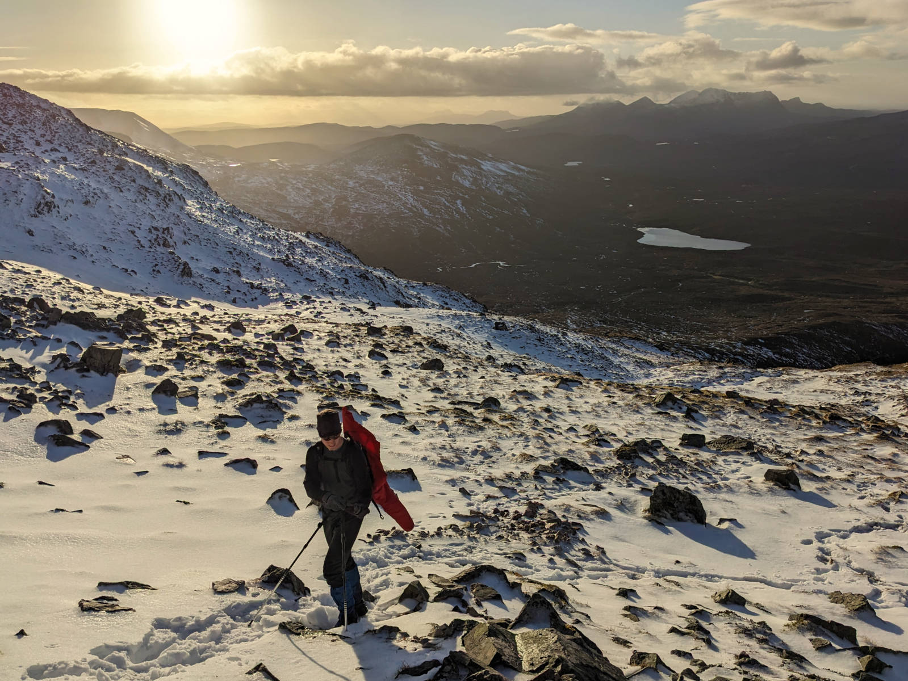

Happy 2024! To celebrate the New Year, we decided to go on a New Year's walk on January 1st. We looked for new adventures in places without cloud cover and decent winds, and decided on Conival. Doesn’t it look pretty there in the back?

Conival is a munroe of 987 metre high that is located in the North of Scotland in the area Assynt. Though it looked like less snow had fallen this far north, we were happy to find snow on our tracks.

The higher we go, the more snow cover we find. Storm Gerrit and some other storms have passed through recently, hammering the rocks on these elevations with ice and snow crystals. The wind direction can be seen easily.
Conival is on the Scottish divide, so that once this snow at the top melts, some water will end up on the West coast, and some on the East coast. For now, it seems firmly in place to enjoy the view of the spectacular landscape with us.

There is a little shelter wall at the top and we’re happy it’s there. While on the lower slopes we were in T-shirts enjoying the windstill and sunny weather, here at the top the wind blows hard and makes the temperature drop so that we need extra layers to keep warm. Time for snacks and a warm drink. In the background you can see Lake Assynt, where our car is parked. Is that really only 7 km away?

It’s so beautiful at the top that we’d like to stay a while. However, the sun is setting and we still need to get back. We enjoy the view just a bit longer, then pack up and head back.

We don’t need ice-axes or crampons here and thus the axes stay on our backpacks, which is what you can see sticking out at Leighs back. The snow is loose and thin, and the top ridge is wide enough for us to be safe if we were to stumble. If needed, we would hold an axe in one hand and a pole in the other hand so that if we were to slip we could stop ourselves from sliding with the axe.

The setting sun gives a dreamy feeling about the place. But it’s not time to sleep yet. We have some more walking and then driving to do. As soon as we’re a little lower, the strong wind disappears and all is calm again. We can walk back in our sweaters and make it back to the car with the very last light. A great trip to embrace the new year.